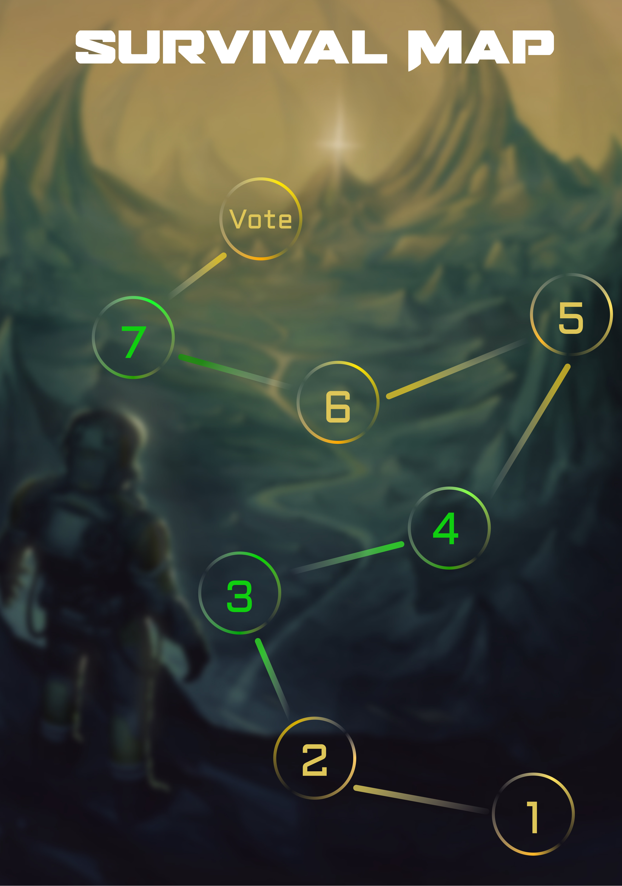

PRODUCT DESIGN · 桌游设计
《第七天》— 末日生存 · 半合作 · 社交推理
一款面向 13 岁以上玩家的末日生存题材半合作策略桌游。玩家扮演辐射污染区中的幸存者，在七天内共同应对随机灾难事件，合理分配水、食物、燃料和医疗包等资源，并在合作中识别隐藏在队伍中的"感染者"。融合资源管理、手牌策略与社交推理，多结局系统带来极高重玩性。

玩家既要协作完成每日事件，又要权衡个人目标与团队利益。信任与背叛贯穿始终，每一局都可能产生完全不同的社交动态。
不同身份对应不同胜利条件——救援逃生、秘密逃生、感染者渗透胜利等，极大地提升了游戏的重玩性和叙事张力。
感染者混入幸存者队伍，玩家需通过讨论、投票与猜忌找出内鬼，融合狼人杀式的社交推理乐趣。
手牌管理、技能卡使用、资源博弈、虚张声势等多层次策略交织，每回合都有有意义的决策空间。